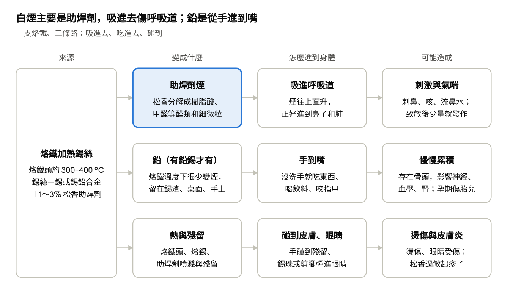

結論
隊辦焊錫對身體最大的風險，是助焊劑（松香）冒出的白煙，不是鉛煙。英國職安主管機關 HSE 說，它是「職業性氣喘」（因工作得的氣喘）的主要成因之一。有鉛、無鉛錫絲都一樣會冒這種煙。
鉛只有用有鉛錫絲才要擔心，主要是沾到手和桌面，再跟著零食吃進去。隊辦的錫絲有沒有鉛還沒確認，確認前先當有鉛來防。
隊辦沒有量過空氣，所以說不出「超標」還是「安全」。這是推論：社團焊得比工廠少很多，多數人可能頂多刺鼻、喉嚨癢。要防的是少數人被「致敏」（身體開始把松香當敵人），之後吸一點就可能喘，可能拖很久，有些人離開焊錫環境後也沒有完全好。
最該先做的三件事，都不用花錢：
- 吸煙機挪到烙鐵旁：吸口越近越好、不擋到手就行；焊完讓它多跑一陣子，窗戶多開一會兒。它現在離焊點太遠，而且外型像 HAKKO 493，是只有活性碳濾片的小黑盒。英國 HSE 實測過這類機器：碳片只濾掉一小部分有害成分，排出來的風還帶著煙，只適合很偶爾、量很少的焊接，出風口也別對著人。
- 焊接桌不吃不喝，焊完用肥皂洗手：乾洗手不能取代，CDC 說它可能去不掉鉛。
- 鋰電池搬離焊接桌：烙鐵燙到電池，或錫珠搭到正負極，都可能短路起火；鋰電池燒起來還會放出氟化氫等有毒氣體。
想再升級，最划算的是把焊點三面圍起來，或用風管把煙直接排到窗外（見「隊辦怎麼改」）。
下一步（負責人請隊上自己填）：
隊辦現況
焊接集中在同一張工作桌：兩個烙鐵位、一台桌上型吸煙機、XT60 接線和 10000 mAh 鋰電池都在桌上（2026-10-31 社辦照片）。
| 項目 | 照片看到的 | 為什麼重要 |
|---|---|---|
| 烙鐵 | 一台黑色焊台＋一支紫柄烙鐵，各有烙鐵架 | 兩個焊接位，賽前可能同時開工 |
| 吸煙機 | 面板寫「FUME EXTRACTOR」的黑色桌上型機，外型像白光 HAKKO 493（風扇＋活性碳濾片），放在桌子後方 | 這型要貼近烙鐵才有用；濾片多久沒換不知道 |
| 錫絲 | 2 捲，綠色線軸，標籤拍不清楚 | 有沒有鉛，決定要不要擔心鉛 |
| 鋰電池 | 10000 mAh LiPo 平放在焊接桌上 | 跟烙鐵同桌是起火風險 |
| 房間 | 地板約 67 m²、樓板高約 3.3 m；有窗戶、窗型冷氣和室內測試泳池 | 窗型冷氣大多只把室內空氣吹來吹去，不會換進外面的空氣 |
下次到隊辦可以順手確認這 4 件事，確認完拍照或回報給隊上：
另外請每個人自己想一下：有沒有氣喘、過敏體質，或正在懷孕、備孕、產後一年內？不用回報，有的話請看「對身體的影響」裡的「誰要更小心」。
焊錫怎麼跑進身體：三條路

最該擋的是第一條「吸進去」：白煙從烙鐵直直往上升，要在煙柱旁就把它抓走。第二條「吃進去」靠洗手、不在焊台吃東西，就能大幅減少（推論，沒有實測數字）。第三條「碰到」：少用手直接摸助焊劑殘留，焊完一樣洗手。
對身體的影響
最確定的傷害是呼吸道和皮膚過敏，兩者都來自松香；鉛有毒很確定，但社團的焊錫量會吃進多少，沒有資料。
| 部位 | 會怎樣 | 從哪來 | 證據多強 |
|---|---|---|---|
| 肺 | 咳、喘、胸悶；已經過敏的人，只要短時間（15 分鐘以內）吸到焊煙就可能發作 | 松香助焊劑煙 | 強：英國 HSE 列為職業性氣喘的主要成因之一；讓過敏工人實際吸松香煙，肺功能真的下降 |
| 鼻子、喉嚨、眼睛 | 刺鼻、喉嚨癢、流鼻水、眼睛刺痛 | 助焊劑煙 | 中：一家英國電子廠回問卷的員工，22% 有跟工作有關的鼻炎 |
| 皮膚 | 紅、癢、起疹子（過敏性接觸皮膚炎） | 松香、助焊劑殘留 | 強：皮膚炎病人做過敏貼布測試，約 3.5% 對松香有反應（一般人約 0.9%） |
| 全身（鉛） | 存在骨頭裡慢慢累積；影響神經、血壓、腎臟，孕期影響胎兒 | 有鉛錫絲，手到嘴 | 強（鉛有毒很確定）；但社團會吃進多少，沒資料 |
| 手、眼睛 | 燙傷；錫珠、助焊劑或剪下的腳彈進眼睛 | 烙鐵、熔錫、斜口鉗 | 各大學焊錫守則都列 |
致敏就像花生過敏：前幾次沒事，某天身體把松香記成敵人，之後一點點就可能發作。HSE 說，症狀可能焊完當下就出現，也可能幾小時後、甚至夜間才出現，所以容易被忽略。皮膚過敏測試是陰性，也不代表沒有松香氣喘（1979 年一項研究的 58 名病人全部陰性），有呼吸道症狀要看職業醫學科。
氣喘會不會好？HSE 說，肺一旦變得過敏，之後就算濃度很低也可能發作，繼續吸症狀會更嚴重。一項 1982 年的追蹤發現，離開工廠的人，約一半「呼吸道太敏感、一點刺激就收縮」的狀況恢復正常，但這不等於症狀全好；留在同廠換工作的只有 1 人恢復。越早遠離焊煙，恢復的機會越大。
兩個常見誤會：
- 換無鉛就沒事：無鉛錫絲通常一樣包著松香芯，只去掉了鉛。無鉛要更高溫，助焊劑的酸性也較強、比較容易揮發，HSE 說烙鐵從 250 °C 到 400 °C，煙量可能變成三倍，所以無鉛的煙可能更多（沒有直接比較有鉛、無鉛的實測）。
- 焊錫會致癌：煙裡的甲醛是第 1 類致癌物，但這個分級只表示「確定能讓人致癌」，沒說多少量才會。唯一找到的焊錫區實測，是 1981 年美國 NIOSH 的兩筆（0.006、0.04 ppm，台灣勞工上限是 1 ppm），量不高，也不能代表隊辦。
誰要更小心（這些人更要把吸煙機、開窗、洗手做確實，不舒服就先離開焊錫區）：
- 已經對松香過敏的人：就算自己不焊，同一間有人焊也可能受影響
- 原本有氣喘的人：煙可能讓氣喘加重
- 過敏體質的人：只有一篇 1979 年的小研究發現微弱關聯，但值得留意
- 懷孕、備孕或產後一年內的人：不要碰有鉛錫絲；松香煙對孕期的影響沒查到資料，保守起見少接觸
- 賽前連續焊好幾小時、臉湊近焊點的人
風險有多大
隊辦沒量過空氣，沒辦法說超標；下面先用研究推估隊上幾種情況，再附各國上限和工廠研究當尺。
換算到隊辦（依研究推估，不是實測）：
| 情況 | 風險 | 為什麼 | 該怎麼做 |
|---|---|---|---|
| 偶爾焊幾個點，吸煙機貼近、開窗 | 低 | 量少；煙被吸離臉部，再靠開窗稀釋 | 照守則做 |
| 賽前連續焊好幾小時，臉湊近、吸煙機擺遠 | 中 | 刺激變多，致敏機會增加 | 吸煙機貼近、開窗，中間起來休息透氣 |
| 已經對松香過敏 | 高 | 短時間吸到就可能發作 | 盡量別焊，有人焊時也別待在旁邊 |
| 原本有氣喘 | 中 | 煙可能讓氣喘加重 | 盡量讓別人焊；要焊就貼近吸煙機、開窗，不舒服馬上離開 |
| 有鉛錫絲，在焊台吃東西、沒洗手 | 中 | 鉛直接吃進去，空腹時吸收更多 | 不在焊台吃喝，焊完用肥皂洗手 |
| 懷孕或備孕，用有鉛錫絲 | 高 | 胎兒對鉛最敏感 | 不碰有鉛錫絲 |
各國上限（給每天上班 8 小時的勞工用的管理門檻，不代表低於它就安全）：
| 物質 | 上限 | 誰訂的 |
|---|---|---|
| 松香助焊劑煙（量的是裡面的樹脂酸） | 8 小時平均 0.05 mg/m³；15 分鐘 0.15 mg/m³，而且要盡量再壓低；原表標為致敏物 | 英國 HSE |
| 松香芯錫絲加熱冒出的東西（換算成甲醛來量） | 0.1 mg/m³ | 美國 NIOSH（建議值） |
| 松香芯錫絲加熱冒出的東西 | 不給數字，要求越低越好，並註明它會讓皮膚和呼吸道過敏 | 美國 ACGIH（工業衛生專家協會） |
| 鉛（空氣中） | 8 小時平均 50 µg/m³（＝0.05 mg/m³） | 台灣勞工作業場所容許暴露標準 |
| 甲醛 | 1 ppm（現行值；114 年修法，部分物質 116 年起改新值，甲醛新值還沒確認） | 台灣勞工作業場所容許暴露標準 |
mg/m³ 是每立方公尺空氣裡有幾毫克，µg/m³ 是幾微克，1 mg＝1,000 µg。低於上限也不保證沒事：1979 年那家英國電子廠，助焊劑煙還低於當時的上限，回問卷的員工照樣有 22% 出現跟工作有關的喘或呼吸困難。
工廠研究還說了三件事：
- 把幾篇研究合起來算，焊錫工呼吸會咻咻叫（喘鳴）的勝算，約是沒焊錫的人的 2.6 倍（只來自 3 篇有校正吸菸的研究），肺功能只小降約 0.9%；這些都是全職工廠工人。
- 手焊時空氣裡的鉛通常很少，但不是零，焊 XT60／XT90 這種要高溫久焊的接頭可能多一些；鉛主要留在桌面和手上。NIOSH 在電路板廠量到的空氣鉛，最高一次是 49 µg/m³（快碰到上限 50 µg/m³），那時作業員正在清錫渣。
- 控制差的工廠（伊朗，空氣鉛 90 µg/m³，已超過上限），女性焊錫工平均血鉛 10.6 µg/dL（照 NIOSH 標準算偏高，數字怎麼看見「身體不舒服怎麼辦」）；一項證據較弱的馬來西亞研究（樣本數、錫絲有沒有鉛都不清楚）則發現，電子廠焊錫工跟沒接觸的人血鉛差不多。
要知道隊辦落在哪一格，先記一個月：誰焊、焊多久、用哪捲錫絲。焊台旁貼一張紀錄表，或開個共用表單，焊完順手填一行；看醫生時也用得到。
台灣法規怎麼看
台灣法規管的是雇主和勞工，學生社團算不算是灰色地帶，所以不能說隊辦違法；但可以拿法規當標竿。
- 學生算不算「工作者」：職安法施行細則第 2 條，把受工作場所負責人指揮或監督、「以學習技能、接受職業訓練為目的從事勞動」的人也算進去。白話是：為了學技術、聽場地負責人指揮做事的人，也可能算。純學生自主的社團算不算，沒找到勞動部解釋。
- 有鉛錫絲在通風不良處焊，就是「鉛作業」：《鉛中毒預防規則》第 2 條把「於通風不充分之場所從事鉛合金軟焊之作業」列為鉛作業。鉛合金指含鉛 10% 以上（第 3 條），所以 Sn63/Pb37、60/40 都算，無鉛錫絲不算。
- 怎樣算通風不充分：第 3 條寫「室內對外開口面積未達底面積二十分之一以上或全面積百分之三以上者」。隊辦地板約 67 m²，二十分之一是 3.35 m²；窗簾拉上、門關著時，很難說通風充分。這句有解讀空間，以主管機關解釋為準。
- 規定要做的事：局部排氣（在焊點旁直接把煙抽走）或整體換氣（整間換進外面的空氣，每人每分鐘 1.67 m³ 以上；第 13、32 條）、每天用水或吸塵器清潔（第 36 條）、洗手設備（第 37 條）、公告禁止飲食和吸菸（第 44 條）。兩人同時焊，等於每小時要換進約 200 m³ 外氣，差不多是整間隊辦的空氣量。
- 懷孕與女性：《女性勞工母性健康保護實施辦法》第 10 條，把在鉛及其化合物散布場所工作的女性勞工，依血鉛分三級：未滿 5、5 到未滿 10、10 µg/dL 以上。
- 松香煙：這次沒查到台灣容許暴露標準有松香煙的專門項目；職安署網站上的《刺激性或過敏性氣喘認定參考指引》，把助焊劑（以松香為例）列為會引起氣喘的物質。
- 學校：陽明交大新生資訊頁寫，進實驗場所前要先完成至少 3 小時安全衛生訓練。隊辦算不算環安中心管的「實驗場所」（算的話，進隊辦的人都要先受訓）、錫渣怎麼回收，建議由隊長統一去問環安中心。
隊辦怎麼改
原則是先讓煙少冒、在焊點旁就抓走，再談換設備；口罩擺最後。下表大致由便宜排到貴，前七項幾乎不用花錢。
| 做法 | 花費 | 為什麼有用 |
|---|---|---|
| 吸煙機挪到烙鐵旁，吸口越近越好、對著煙 | 0 元 | 吸口一拉遠，吸力就掉很快（跟距離平方成反比）：離一個吸口寬度，就只剩約一成；MIT 對吸煙管口的建議是離焊點約 13 cm |
| 用不會燒的板子把焊點三面圍起來，吸煙機當背牆 | 0～數百元 | HSE 案例：工廠的排煙設備改成包圍式後，人吸到的煙少了 98%；隊辦的機器只有活性碳，效果不會一樣，還是要開窗 |
| 頭偏一邊，不要在煙柱正上方；工件墊高 | 0 元 | 煙會往上直升，很可能直接進到你呼吸的位置；工件墊高，就不用低頭湊過去 |
| 溫度夠用就好；焊 XT60／XT90 換大烙鐵頭，不要只調高溫 | 0 元（沒有大烙鐵頭要另買） | 溫度越高，煙越多：HSE 說烙鐵從 250 °C 到 400 °C，煙量可能變成三倍 |
| 焊接時開窗；電扇往窗外吹，不要對著焊台吹 | 0 元 | 窗型冷氣大多不換外氣；側風會把煙吹離吸口 |
| 焊接桌不吃不喝；焊完用肥皂洗手；桌面濕擦，不要用嘴吹 | 0 元 | 鉛主要從手進嘴；肥皂洗得掉大部分但洗不全，要認真搓；乾洗手可能去不掉 |
| LiPo 搬離焊接桌；IPA（異丙醇，清助焊劑用的酒精）用小瓶、用完蓋緊 | 0 元 | 鋰電池起火會放出氟化氫；IPA 在 12 °C 以上就有可點燃的蒸氣 |
| 焊錫和剪腳時戴護目鏡 | 很便宜 | 錫珠、助焊劑、剪下的腳都會彈 |
| 換活性碳濾片 | 如果是 HAKKO 原廠機，A1001 五片約 US$25～33（先看型號） | 活性碳吸滿就沒效，MIT 要求排煙設備每年至少檢查一次、定期換濾網；室內泳池的濕氣可能讓它更快失效（推論） |
| 下次買錫絲：選無鉛；買得到無松香（rosin-free）的更好 | 看品牌 | 無鉛就沒有鉛的問題；無松香是 HSE 的首選，但不含松香的助焊劑也有人用了得氣喘，換了照樣要排煙；買之前先看 SDS 有沒有標 H334（呼吸道過敏）、H317（皮膚過敏） |
| DIY：4 吋管道風扇＋風管接到窗外，吸口靠近焊點 | 約 NT$1,200～1,500（只算風扇和風管；吸口罩、窗戶封板另計） | 煙直接排出去，不再吹回室內 |
| 換有 HEPA（高效率微粒濾網）＋活性碳、附吸煙臂的機型 | 國外標價換算約 NT$3 萬上下（台灣要詢價） | HEPA 攔微粒、活性碳吸氣體 |
附註：
- 只有活性碳的桌上機夠不夠：英國 HSE 和 MIT 都說它擋不住細微粒，HSE 實測碳片只濾掉一小部分有害成分；HSE 也說它只適合「很偶爾、量很少」的焊接，出風口不能對著人，房間通風好更理想。伊利諾大學、賓州大學則認為附活性碳的桌上機對多數用途已經夠用。
- 現有機器的便宜升級：HAKKO 有 999-198 高效濾片，宣稱最多攔下約 90% 微粒（不到 HEPA 等級）；493 能不能裝，要先確認型號。
- 萬元級的參考標價：Weller Zero Smog EL Kit 1 歐洲 €920（未稅）；白光 HAKKO FA-430 日本 ¥142,780（含稅，吸嘴風管另售；FA-430、FA-431 哪一台停售說法有衝突）。
- 想買新的桌上型吸煙機（寶工、賽威樂 Xytronic 等約 NT$1,600～3,800）之前，先看規格有沒有 HEPA；只有活性碳的跟現在那台同一類，換了差不多。
- 口罩不能代替排煙：N95 只擋微粒、擋不住氣體，一般口罩更不行。
- 用有鉛錫絲的話，鉛會沾在衣服和手上帶回家；回家抱小孩前先換衣服、洗手洗臉（CDC 建議）。
- AUV 常做的環氧樹脂灌封也會讓皮膚過敏：未固化的樹脂和硬化劑要戴厚的丁腈手套，不要用乳膠或棉手套（NIOSH 建議）。
- 想驗證吸煙機有沒有在抓：用 PM2.5 感測器（例如 PMS5003），同樣焊法開、關各測一次比較。它看不到 0.3 µm 以下的細小微粒，也測不到氣體，讀數低不代表安全。
隊辦焊錫守則
印出來貼在焊台旁，一張 A4 就放得下。
焊之前
- 鋰電池、IPA、食物和飲料離開焊接桌。
- 開窗；吸煙機打開，吸口對著焊點、越近越好（不擋到手），出風口別對著人。
- 戴護目鏡。
- 看錫絲標籤：懷孕、備孕或產後一年內的人不碰有鉛錫絲。
焊的時候
- 頭偏一邊，不要在煙柱正上方。
- 溫度夠用就好；焊粗線吃不上錫，就換大烙鐵頭，不要一直調高溫。
- 烙鐵不用就放回烙鐵架；離開座位就關電源。
焊完
- 吸煙機多跑一陣子，窗戶多開一會兒。
- 錫渣和剪下的腳收進專用盒，清錫渣時吸煙機也要開；桌面用濕紙巾擦，不要用嘴吹或乾刷。
- 用肥皂洗手再吃東西，乾洗手不算。
- 咳、喘、胸悶或起疹子：先停焊、跟隊上說；反覆出現就去看醫生，喘得厉害要馬上就醫。
身體不舒服怎麼辦
焊錫後反覆咳、喘、胸悶，或皮膚起疹子，就先停焊、去看醫生，別等它自己好；喘得厉害、說話困難，就馬上就醫或打 119。
| 狀況 | 先做什麼 | 去哪裡 |
|---|---|---|
| 焊錫時或焊完（甚至當晚）咳、喘、胸悶、流鼻水 | 停焊、離開焊錫區；反覆出現就去看醫生，喘得厉害、說話困難就馬上就醫或打 119 | 職業醫學科或胸腔內科 |
| 皮膚紅、癢、起疹子 | 不再碰助焊劑殘留；看醫生時說有接觸松香 | 皮膚科（可以做貼布測試：把松香等過敏原貼在皮膚上，看會不會起反應） |
| 擔心鉛：用有鉛錫絲、常在焊台吃東西、懷孕或備孕 | 驗血鉛 | 職業醫學科；或醫事檢驗所自費（有檢驗所標約 NT$400，以現場報價為準） |
| 燙傷 | 沖、脫、泡、蓋、送：冷水沖 15～30 分鐘，不要塗牙膏或藥膏 | 起水泡或範圍大就送醫（國健署原則是處理完都送醫） |
| 鋰電池冒煙、膨脹 | 人先離開房間，不要吸到煙 | 起火打 119 |
看醫生時帶兩樣東西：錫絲的 SDS（安全資料表，跟賣家要，或上品牌官網用型號找），和最近焊了多久的紀錄。醫師要靠這些判斷是不是跟焊錫有關。
新竹臺大分院有環境及職業醫學部，2023 年獲勞動部認可為職業傷病診治專責醫院。勞動部全國職業傷病服務專線是 (02)3366-8266；服務對象以勞工為主，學生能不能用要先問。
驗出來的血鉛怎麼看（µg/dL 是每 100 毫升血裡有幾微克鉛；數字最好請職業醫學科醫師解讀）：
- 鉛沒有已知的安全量，下面都是管理門檻，不是安全線。
- 美國把成人 3.5 µg/dL 當參考值，100 個成人裡只有約 2～3 個會超過；NIOSH 把 5 µg/dL 以上算「偏高」。
- 美國 CSTE（州與地方流行病學家協會）2021 年的處置指引：3.5～9 µg/dL 要了解風險、減少接觸，懷孕的人考慮暫時離開，並持續追蹤血鉛。
- 台灣女性勞工的母性保護：5 以上進第二級、10 以上進第三級。
參考資料
大部分來源只看過搜尋摘要；2026-11-04 另外打開 9 份原頁核對，結果列在下面。「已重查」是第二位查核員或作者用另一次搜尋獨立核對過；「補查」是最後為了補漏洞另外找的，只查過一次；「未重查」的只當參考。查不到或被查核否決的數字，報告裡已經拿掉。
原頁核對（2026-11-04，先確認連線路線沒經過中港再開）：
- HSE〈Solderer〉：松香煙是職業性氣喘的主要成因之一（原文 a top cause）；桌上型吸煙盒除非裝 HEPA，否則用處有限。
- HSE INDG249（2015）：「風扇＋濾網」的小黑盒，HSE 測試發現粗活性碳濾片只濾掉一小部分有害成分，排氣仍帶著相當濃度的煙，只適合很偶爾、量很少的焊接；烙鐵從 250 °C 到 400 °C，煙量可能變三倍；焊錫煙微粒多在 0.5～1.0 µm。
- HSE INDG248（2015）：松香助焊劑會引起氣喘和皮膚炎；症狀有咳、喘鳴、流淚流鼻水、胸悶；繼續吸會更嚴重。
- HSE EH40 暴露上限表：Rosin-based solder flux fume 8 小時 0.05、15 分鐘 0.15 mg/m³，標 Sen（致敏物）。
- HSE OCE4：上限同上、要盡量再壓低；可行就改用無松香或低松香錫絲。
- HSE KAC Alarms 案例：原本是捕集式排氣，改成包圍式罩子後暴露降 98%；風扇和濾材沿用，罩子 £140～180。
- HSE 職業性氣喘頁：肺一旦過敏，低濃度也可能發作；症狀可能幾小時後、夜間才出現（這頁講電鍍，原理通用）。
- MIT EHS-0167：電子焊接不太可能產生鉛煙；煙往上直升進呼吸區；吸煙管口約 5 吋；要活性碳加 HEPA，沒有 HEPA 的吸煙器控制不足；排煙設備每年至少檢查一次；肥皂水洗手、濕紙巾擦桌面。
- 鉛中毒預防規則（113-06-13 修正）：第 2 條第 2 項第 10 款、第 3 條（鉛合金 10%、通風不充分）、第 13、32、36、37 條都和報告一致；禁止飲食吸菸是第 44 條，之前寫成第 41 條是錯的，已改正。
- 打不開：HSE SIM 03/2002/26 和〈Electronics (Soldering)〉兩頁已下架。
- 已拿掉：「HSE 說職業性氣喘一旦養成就是永久的」「潛伏期數個月到數年」這兩句，原頁找不到。
展開全部參考資料（61 筆）
| 主題 | 來源 | 用在哪 | 查核 |
|---|---|---|---|
| 松香煙 | HSE〈Solder fume and you〉INDG248 | 症狀、繼續吸會更嚴重 | 已重查 |
| 松香煙 | HSE〈Electronics (Soldering)〉 | 原頁已下架（2026-11-04 打不開） | 已重查 |
| 松香煙 | HSE SIM 03/2002/26 | 原頁已下架；上限改用 EH40、OCE4 原文確認 | 已重查 |
| 松香煙 | HSE 職業性氣喘頁 | 少量也可能發作、症狀可能夜間才出現 | 補查 |
| 松香煙 | NIOSH Pocket Guide：Rosin core solder | 美國建議值 0.1 mg/m³ | 已重查 |
| 松香煙 | WorkSafeBC E-Limit（轉載 ACGIH） | 不給數字、標為致敏物 | 已重查 |
| 松香煙 | Burge 等 1979，Thorax | 22% 喘或呼吸困難、22% 鼻炎 | 已重查 |
| 松香煙 | Burge 等 1979 病例對照研究 | 過敏體質微弱關聯、皮膚測試全陰性 | 補查 |
| 松香煙 | Burge 等 1980，Clinical Allergy | 已過敏者 15 分鐘內發作 | 已重查 |
| 松香煙 | Burge 1982，Thorax | 離開後約一半氣道敏感度恢復 | 已重查（有修正） |
| 松香煙 | Mendy 等 2012 統合分析 | 喘鳴勝算比 2.6 | 已重查（有修正） |
| 松香煙 | Karimian 等 2026 統合分析 | 皮膚炎病人約 3.5% 對松香過敏 | 已重查（有修正） |
| 松香煙 | NIOSH HETA 81-369／81-466 | 焊錫區甲醛兩筆 | 補查 |
| 松香煙 | 劍橋大學 HSD193C | 溫度越高煙越多 | 補查 |
| 松香煙 | 華盛頓大學 EHS 焊錫 SOP 範本 | 無鉛要更高溫、助焊劑較易揮發 | 已重查 |
| 松香煙 | 非松香助焊劑致喘病例 | 換無松香照樣要排煙 | 補查 |
| 松香煙 | Gómez 等 2013 | 停焊後細微粒仍飄在空中 | 未重查 |
| 鉛 | 賓州大學 EHRS 焊錫安全 | 鉛主要從手進嘴 | 已重查（有修正） |
| 鉛 | NIOSH 波焊鉛暴露評估 | 空氣鉛低、表面有鉛 | 已重查 |
| 鉛 | NIOSH HETA 2007-0201-3086 | 清錫渣時 49 µg/m³ | 已重查（有修正） |
| 鉛 | 焊接溫度與重金屬排放（2025） | 高溫久焊鉛排放較多 | 未重查 |
| 鉛 | Mohammadyan 等 2019 | 伊朗工廠血鉛 10.6 µg/dL | 已重查 |
| 鉛 | 馬來西亞電子廠焊錫工研究 | 血鉛跟沒接觸的人差不多 | 補查（證據弱） |
| 鉛 | NTP 2012 低劑量鉛專著 | <10、部分 <5 µg/dL 就有影響 | 已重查（只引總結論） |
| 鉛 | NIOSH 成人血鉛指引 | 成人 3.5／5 µg/dL | 已重查 |
| 鉛 | CSTE 2021 成人鉛暴露處置指引 | 3.5～9 µg/dL 怎麼處置 | 補查 |
| 鉛 | ATSDR ToxGuide：鉛 | 空腹吸收更多、存在骨頭 | 已重查（有修正） |
| 鉛 | CDC：乾洗手使用建議 | 乾洗手可能去不掉鉛 | 已重查 |
| 鉛 | NIOSH 去鉛濕巾研究 | 肥皂洗得掉大部分但洗不全 | 已重查 |
| 鉛 | CDC：工作與嗜好的鉛 | 鉛會帶回家，回家先換衣服 | 未重查 |
| 設備 | MIT EHS-0167 | 要活性碳＋HEPA、吸煙管口約 13 cm、每年檢查 | 已重查（有修正） |
| 設備 | Stanford 焊錫安全 | 焊錫區不准飲食、排回室內要 HEPA | 已重查 |
| 設備 | 伊利諾大學 DRS 焊錫安全 | 桌上機對多數用途夠用 | 已重查（有修正） |
| 設備 | HSE〈Solderer〉 | 桌上型除非有 HEPA 用處有限 | 已重查 |
| 設備 | HSE KAC Alarms 案例 | 包圍式後吸到的煙少 98% | 已重查 |
| 設備 | OSHA Technical Manual III-3 | 離吸口一個直徑只剩約一成風速 | 補查 |
| 設備 | Hakko 493 規格 | 493 型標配活性碳濾片（隊辦那台型號待確認） | 未重查 |
| 設備 | HAKKO A1001／999-198 濾片 | A1001 主要除臭；999-198 攔微粒最多約 90% | 已重查（有修正） |
| 設備 | A1001 價格（DigiKey） | 五片約 US$25～33 | 未重查 |
| 設備 | Weller Zero Smog EL Kit 1 | €920（未稅） | 已重查 |
| 設備 | HAKKO FA-430 日本官網 | ¥142,780 | 已重查 |
| 設備 | 寶工桌上型比價（FindPrice） | NT$2,200～3,800 | 未重查 |
| 設備 | Xytronic 比價（BigGo） | 約 NT$1,600～2,200 | 未重查 |
| 設備 | 4 吋風管比價（FindPrice） | 風扇＋風管約 NT$1,200～1,500 | 未重查 |
| 設備 | EPA：外氣怎麼進到室內 | 窗型冷氣多半不換外氣 | 未重查 |
| 設備 | NIOSH 濾材式面罩 | N95 擋不住氣體 | 未重查 |
| 設備 | CMU EHS 焊錫安全 | 焊錫和剪腳要戴護目鏡 | 未重查 |
| 設備 | 低價 PM 感測器原理（Aerosol Sci. Tech. 2023） | 看不到 0.3 µm 以下 | 已重查 |
| 設備 | NIOSH：環氧樹脂 | 灌封會讓皮膚過敏、戴厚丁腈手套 | 補查 |
| 安全 | NIOSH Pocket Guide：異丙醇 | 閃火點約 12 °C | 已重查 |
| 安全 | Larsson 等 2017，鋰電池火災氟化物 | 起火放出氟化氫 | 補查 |
| 安全 | 健康九九：燙傷處理 | 沖脫泡蓋送 | 補查 |
| 法規 | 鉛中毒預防規則 | 第 2、3、13、32、36、37、44 條 | 已重查（條號以查核版為準） |
| 法規 | 女性勞工母性健康保護實施辦法第 10 條 | 血鉛三級 | 已重查 |
| 法規 | 勞工作業場所容許暴露標準 | 鉛 50 µg/m³、甲醛 1 ppm | 已重查 |
| 法規 | 職安法施行細則第 2 條（維基文庫） | 學生算不算工作者 | 已重查 |
| 法規 | 職安署《刺激性或過敏性氣喘認定參考指引》 | 助焊劑（以松香為例）列為致喘物 | 已重查（內容） |
| 學校 | 陽明交大新生資訊：環安衛教育訓練 | 進實驗場所前 3 小時訓練 | 未重查 |
| 就醫 | 勞動部職業傷病服務 | 專線 (02)3366-8266 | 已重查 |
| 就醫 | 新竹臺大分院獲認可（新聞） | 職業傷病診治專責醫院 | 已重查 |
| 就醫 | 大安聯合醫事檢驗所：血中鉛 | 自費約 NT$400 | 未重查 |